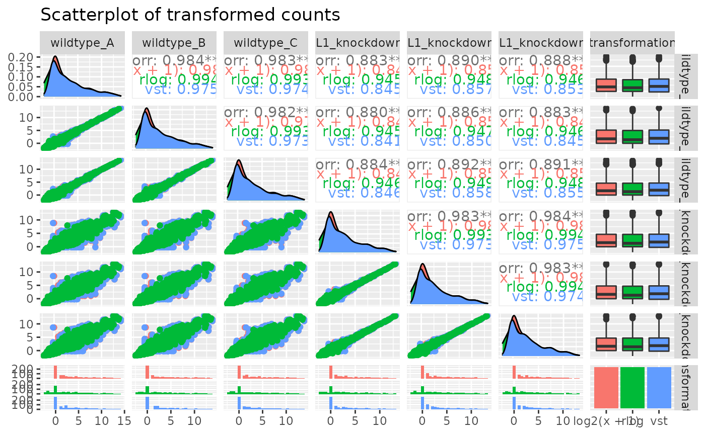
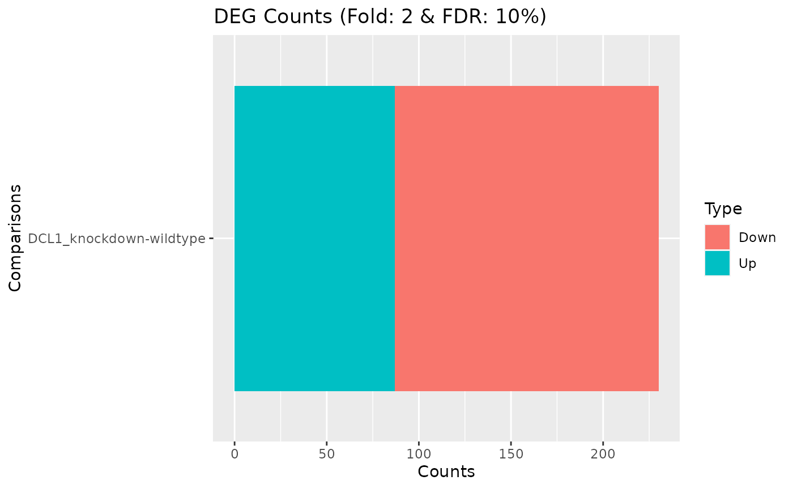
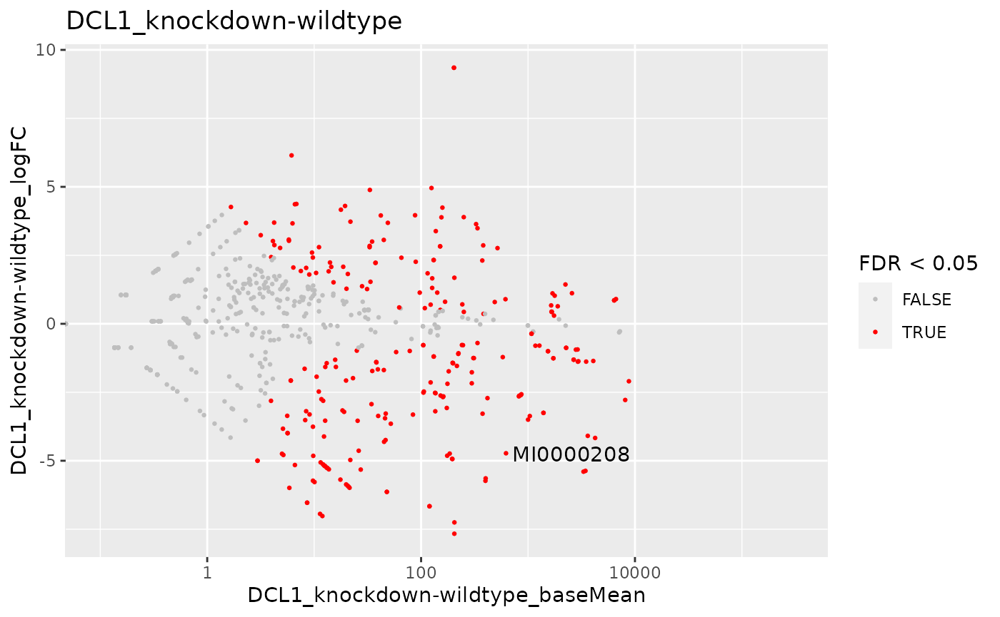
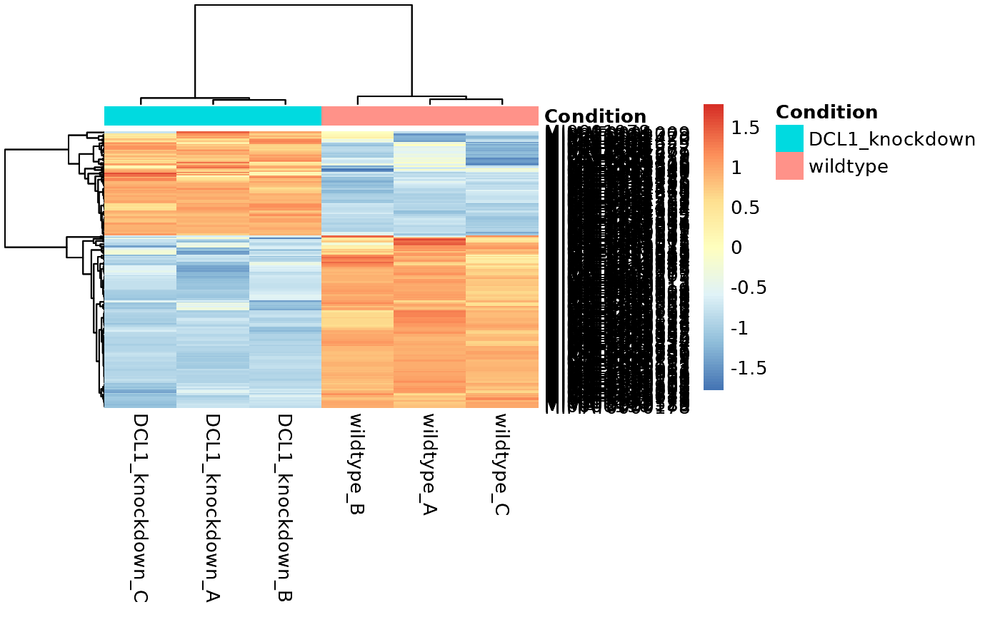
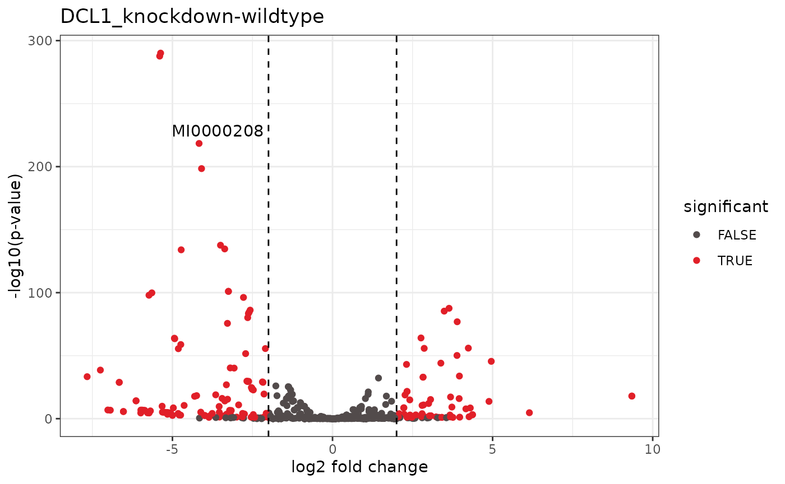

SPmirnaseq
Author: Daniela Cassol (danielac@ucr.edu) and Thomas Girke (thomas.girke@ucr.edu)
Last update: 18 April, 2021
SPmirnaseq.RmdIntroduction
Users want to provide here background information about the design of their miRNA-Seq project.
Samples and environment settings
Define environment settings and samples
A typical workflow starts with generating the expected working environment containing the proper directory structure, input files, and parameter settings. To simplify this task, one can load one of the existing NGS workflows templates provided by systemPipeRdata into the current working directory. The following does this for the mirnaseq template. The name of the resulting workflow directory can be specified under the mydirname argument. The default NULL uses the name of the chosen workflow. An error is issued if a directory of the same name and path exists already. On Linux and OS X systems one can also create new workflow instances from the command-line of a terminal as shown here. To apply workflows to custom data, the user needs to modify the targets file and if necessary update the corresponding .cwl and .yml files. A collection of pre-generated .cwl and .yml files are provided in the param/cwl subdirectory of each workflow template. They are also viewable in the GitHub repository of systemPipeRdata (see here).
library(systemPipeR)
library(systemPipeRdata)
genWorkenvir(workflow = "systemPipeR/SPmirnaseq", mydirname = "mirmaseq")
setwd("mirnaseq")
Experiment definition provided by targets file
The targets file defines all FASTQ files and sample comparisons of the analysis workflow.
targetspath <- system.file("extdata", "targets_mirnaseq.txt",
package = "SPmirnaseq")
targets <- read.delim(targetspath, comment.char = "#")
showDT(targets)Read Preprocessing
Read Preprocessing with Cutadapt
Cutadapt (Martin 2011) finds and removes adapter sequences, primers, poly-A tails and other types of unwanted sequence from your high-throughput sequencing reads. Reads from miRNA sequencing contain the 3’ sequencing adapter because the read is longer than the molecule that is sequenced. Please find full documentation for installing the software on your system and the user guide.
The parameter settings of the Cutadapt are defined in the cutadapt.cwl and cutadapt.yml files. The following shows how to construct the corresponding SYSargs2 object:
dir_path <- system.file("extdata/cwl/cutadapt/", package = "SPmirnaseq")
WF <- loadWF(targets = targetspath, wf_file = "cutadapt.cwl",
input_file = "cutadapt.yml", dir_path = dir_path)
WF <- renderWF(WF, inputvars = c(FileName = "_FASTQ_PATH1_",
SampleName = "_SampleName_"))
cmdlist(WF)[1:2]## $wildtype_A
## $wildtype_A$cutadapt
## [1] "cutadapt --trimmed-only -a TGGAATTCTCGGGTGCCAAGG -o ./results/cutadapt/wildtype_A.fastq.gz -m 18 -M 30 ./data/SRR5068868_1.fastq.gz"
##
##
## $wildtype_B
## $wildtype_B$cutadapt
## [1] "cutadapt --trimmed-only -a TGGAATTCTCGGGTGCCAAGG -o ./results/cutadapt/wildtype_B.fastq.gz -m 18 -M 30 ./data/SRR5068869_1.fastq.gz"
output(WF)[1:2]## $wildtype_A
## $wildtype_A$cutadapt
## [1] "./results//cutadapt/wildtype_A.fastq.gz"
##
##
## $wildtype_B
## $wildtype_B$cutadapt
## [1] "./results//cutadapt/wildtype_B.fastq.gz"Interactive job submissions in a single machine:
WF <- runCommandline(WF, make_bam = FALSE)
systemPipeR:::check.output(WF)
writeTargetsout(x = WF, file = "default", step = 1, new_col = "FileTrim",
new_col_output_index = 1, overwrite = TRUE)
Read Preprocessing with preprocessReads function
The function preprocessReads allows to apply predefined or custom read preprocessing functions to all FASTQ files referenced in a SYSargs2 container, such as quality filtering or adaptor trimming routines. The paths to the resulting output FASTQ files are stored in the output slot of the SYSargs2 object. Internally, preprocessReads uses the FastqStreamer function from the ShortRead package to stream through large FASTQ files in a memory-efficient manner. The following example performs adapter trimming with the trimLRPatterns function from the Biostrings package. After the trimming step a new targets file is generated (here targets_trim-se.txt) containing the paths to the trimmed FASTQ files. The new targets file can be used for the next workflow step with an updated SYSargs2 instance, e.g. running the NGS alignments with the trimmed FASTQ files.
Construct SYSargs2 object from cwl and yml param and targets files.
preprocessReads(args = trim, Fct = "trimLRPatterns(Lpattern='TGGAATTCTCGGGTGCCAAGG',
subject=fq)",
batchsize = 1e+05, overwrite = TRUE, compress = TRUE)The following example shows how one can design a custom read preprocessing function using utilities provided by the ShortRead package, and then run it in batch mode with the ‘preprocessReads’ function (here on paired-end reads).
filterFct <- function(fq, cutoff = 20, Nexceptions = 0) {
qcount <- rowSums(as(quality(fq), "matrix") <= cutoff, na.rm = TRUE)
# Retains reads where Phred scores are >= cutoff with N
# exceptions
fq[qcount <= Nexceptions]
}
preprocessReads(args = trim, Fct = "filterFct(fq, cutoff=20, Nexceptions=0)",
batchsize = 1e+05)
Preprocessing with TrimGalore!
TrimGalore! is a wrapper tool to consistently apply quality and adapter trimming to fastq files, with some extra functionality for removing Reduced Representation Bisulfite-Seq (RRBS) libraries.
dir_path <- system.file("extdata/cwl/trim_galore/trim_galore-se",
package = "systemPipeR")
trimG <- loadWorkflow(targets = targetspath, wf_file = "trim_galore-se.cwl",
input_file = "trim_galore-se.yml", dir_path = dir_path)
trimG <- renderWF(trimG, inputvars = c(FileName = "_FASTQ_PATH1_",
SampleName = "_SampleName_"))
trimG
cmdlist(trimG)[1:2]
output(trimG)[1:2]
## Run Single Machine Option
trimG <- runCommandline(trimG[1], make_bam = FALSE)
Preprocessing with Trimmomatic
Trimmomatic (Bolger, Lohse, and Usadel 2014) is aflexible read trimming tool for Illumina NGS data. Please find full documentation here.
dir_path <- system.file("extdata/cwl/trimmomatic/trimmomatic-pe",
package = "systemPipeR")
trimM <- loadWorkflow(targets = targetspath, wf_file = "trimmomatic-pe.cwl",
input_file = "trimmomatic-pe.yml", dir_path = dir_path)
trimM <- renderWF(trimM, inputvars = c(FileName = "_FASTQ_PATH1_",
SampleName = "_SampleName_"))
trimM
cmdlist(trimM)[1:2]
output(trimM)[1:2]
## Run Single Machine Option
trimM <- runCommandline(trimM[1], make_bam = FALSE)FASTQ quality report
The following seeFastq and seeFastqPlot functions generate and plot a series of useful quality statistics for a set of FASTQ files including per cycle quality box plots, base proportions, base-level quality trends, relative k-mer diversity, length and occurrence distribution of reads, number of reads above quality cutoffs and mean quality distribution.
The function seeFastq computes the quality statistics and stores the results in a relatively small list object that can be saved to disk with save() and reloaded with load() for later plotting. The argument klength specifies the k-mer length and batchsize the number of reads to a random sample from each FASTQ file.
## Before
fqlist <- seeFastq(fastq = infile1(WF), batchsize = 10000, klength = 8)
pdf("./results/fastqReport_before.pdf", height = 18, width = 4 *
length(fqlist))
seeFastqPlot(fqlist)
dev.off()It is highly recommended to check the quality of the read trimmed.
## after trimming
output <- subsetWF(WF, slot = "output", subset = 1, index = 1)
fqlist <- seeFastq(fastq = output, batchsize = 10000, klength = 8)
pdf("./results/fastqReport_after.pdf", height = 18, width = 4 *
length(fqlist))
seeFastqPlot(fqlist)
dev.off()FASTQ quality report with FASTQC
FastQC is a java application that provide quality control checks on raw sequence data.
dir_path <- system.file("extdata/cwl/fastqc/", package = "systemPipeR")
fastqcWF <- loadWorkflow(targets = targetspath, wf_file = "fastqc.cwl",
input_file = "fastqc.yml", dir_path = dir_path)
fastqcWF <- renderWF(fastqcWF, inputvars = c(FileName = "_FASTQ_PATH1_",
SampleName = "_SampleName_"))
fastqcWF
cmdlist(fastqcWF)[1:2]
output(fastqcWF)[1:2]
## Run Single Machine Option
fastqcWF <- runCommandline(fastqcWF[1], make_bam = FALSE)Read Alignment
After quality control, the sequence reads can be aligned to a reference genome or miRNA database. The following sessions present some NGS sequence alignment software. Select the most accurate aligner and determining the optimal parameter for your custom data set project.
For all the following examples, it is necessary to install the respective software and export the PATH accordingly. If it is available Environment Module in the system, you can load all the request software with moduleload(modules(idx)) function.
Alignment with Bowtie2
The following example runs Bowtie2 as a single process without submitting it to a cluster.
Building the index:
dir_path <- system.file("extdata/cwl/bowtie2/bowtie2-idx", package = "SPmirnaseq")
idx <- loadWorkflow(targets = NULL, wf_file = "bowtie2-index.cwl",
input_file = "bowtie2-index.yml", dir_path = dir_path)
idx <- renderWF(idx)
idx
cmdlist(idx)
## Run in single machine
runCommandline(idx, make_bam = FALSE)Building all the command-line:
targetspath <- system.file("extdata", "targets_cutadapt.txt",
package = "SPmirnaseq")
dir_path <- system.file("extdata/cwl/bowtie2/bowtie2-mi", package = "SPmirnaseq")
bowtie <- loadWorkflow(targets = targetspath, wf_file = "bowtie2-mapping-mi.cwl",
input_file = "bowtie2-mapping-mi.yml", dir_path = dir_path)
bowtie <- renderWF(bowtie, inputvars = c(FileTrim = "_FASTQ_PATH1_",
SampleName = "_SampleName_"))
bowtie## Instance of 'SYSargs2':
## Slot names/accessors:
## targets: 6 (wildtype_A...DCL1_knockdown_C), targetsheader: 4 (lines)
## modules: 1
## wf: 0, clt: 1, yamlinput: 9 (components)
## input: 6, output: 6
## cmdlist: 6
## WF Steps:
## 1. bowtie2-mapping-mi (rendered: TRUE)
cmdlist(bowtie)[1:2]## $wildtype_A
## $wildtype_A$`bowtie2-mapping-mi`
## [1] "bowtie2 --very-sensitive-local -N 0 -k 50 -S ./results/wildtype_A.sam -x ./data/tair10.fasta -U ./results/cutadapt/wildtype_A.fastq.gz -p 4"
##
##
## $wildtype_B
## $wildtype_B$`bowtie2-mapping-mi`
## [1] "bowtie2 --very-sensitive-local -N 0 -k 50 -S ./results/wildtype_B.sam -x ./data/tair10.fasta -U ./results/cutadapt/wildtype_B.fastq.gz -p 4"
output(bowtie)[1:2]## $wildtype_A
## $wildtype_A$`bowtie2-mapping-mi`
## [1] "./results/wildtype_A.sam"
##
##
## $wildtype_B
## $wildtype_B$`bowtie2-mapping-mi`
## [1] "./results/wildtype_B.sam"Please note that each experiment and/or each species may require an optimization of the parameters used. Here is an example where no mismatches are allowed, and -k mode is used. There is indicative that Bowtie2 with very sensitive local (--very-sensitive-local) argument provides better accuracy and generates smaller P-values for true positives (Ziemann, Kaspi, and El-Osta 2016).
Running all the jobs to computing nodes.
resources <- list(walltime = 120, ntasks = 1, ncpus = 4, memory = 1024)
reg <- clusterRun(bowtie, FUN = runCommandline, more.args = list(args = bowtiePE,
dir = FALSE), conffile = ".batchtools.conf.R", template = "batchtools.slurm.tmpl",
Njobs = 6, runid = "01", resourceList = resources)
getStatus(reg = reg)
bowtie <- output_update(bowtie, dir = FALSE, replace = TRUE,
extension = c(".sam", ".bam"))Alternatively, it possible to run all the jobs in a single machine.
bowtie <- runCommandline(bowtie, make_bam = TRUE)
systemPipeR:::check.output(bowtie)Create new targets file.
names(clt(bowtie))
writeTargetsout(x = bowtie, file = "default", step = 1, new_col = "bowtie",
new_col_output_index = 1, overwrite = TRUE)Read and alignment count stats
Generate a table of read and alignment counts for all samples.
read_statsDF <- alignStats(bowtie, subset = "FileTrim")
write.table(read_statsDF, "results/alignStats_bowtie.xls", row.names = FALSE,
quote = FALSE, sep = "\t")The following shows the first four lines of the sample alignment stats file provided by the systemPipeR package.
table <- system.file("extdata", "alignStats_bowtie.xls", package = "SPmirnaseq")
showDT(read.table(table, header = TRUE)) ## system
Alignment with BWA
The following example runs bwa-aln (Li and Durbin 2009) as a single process without submitting it to a cluster. Please check the full documentation here.
Build the index:
dir_path <- system.file("extdata/cwl/bwa/bwa-idx", package = "systemPipeR")
idx <- loadWorkflow(targets = NULL, wf_file = "bwa-index.cwl",
input_file = "bwa-index.yml", dir_path = dir_path)
idx <- renderWF(idx)
idx
cmdlist(idx) # Indexes reference genome
## Run
runCommandline(idx, make_bam = FALSE)Please note that each experiment may require an optimization of the aligners parameters used. Here is an example allowing one mismatch across the entire read including the seed region. BWA was recommended for small RNA-seq data to recover miRNA abundance profiles (Tam, Tsao, and McPherson 2015).
Running the alignment:
targetspath <- system.file("extdata", "targets_cutadapt.txt",
package = "SPmirnaseq")
dir_path <- system.file("extdata/cwl/workflow-bwa-aln", package = "SPmirnaseq")
bwa <- loadWorkflow(targets = targetspath, wf_file = "workflow_bwa-aln-se.cwl",
input_file = "workflow_bwa-aln-se.yml", dir_path = dir_path)
bwa <- renderWF(bwa, inputvars = c(FileTrim = "_FASTQ_PATH1_",
SampleName = "_SampleName_"))
bwa
cmdlist(bwa)[1:2]
output(bwa)[1:2]
## Single Machine
bwa <- runCommandline(args = bwa, make_bam = TRUE)
## Cluster
library(batchtools)
resources <- list(walltime = 120, ntasks = 1, ncpus = 4, memory = 1024)
reg <- clusterRun(bwa, FUN = runCommandline, more.args = list(args = bwa,
dir = FALSE), conffile = ".batchtools.conf.R", template = "batchtools.slurm.tmpl",
Njobs = 6, runid = "01", resourceList = resources)
getStatus(reg = reg)Create new targets file.
names(clt(bwa))
writeTargetsout(x = bwa, file = "default", step = 1, new_col = "bwa",
new_col_output_index = 1, overwrite = TRUE)Read counting for miRNA profiling experiments
Download miRNA genes from miRBase.
library(rtracklayer)
system("wget ftp://mirbase.org/pub/mirbase/CURRENT/genomes/ath.gff3 -P ./data/")
gff <- import.gff("./data/ath.gff3")
seqlevels(gff)
# system('grep '>' data/tair10.fasta') seqlevels(gff) <-
# c('Chr1', 'Chr2', 'Chr3', 'Chr4', 'Chr5') seqlevels(gff)
gff <- split(gff, elementMetadata(gff)$ID)
bams <- subsetWF(bowtie, slot = "output", subset = 1, index = 1)
# bams <- subsetWF(bwa, slot = 'output', subset = 2, index =
# 1)
bfl <- BamFileList(bams, yieldSize = 50000, index = character())
countDFmiR <- summarizeOverlaps(gff, bfl, mode = "Union", ignore.strand = FALSE,
inter.feature = FALSE) # Note: inter.feature=FALSE important since pre and mature miRNA ranges overlap
rpkmDFmiR <- apply(assays(countDFmiR)$counts, 2, function(x) returnRPKM(counts = x,
ranges = gff))
write.table(assays(countDFmiR)$counts, "results/countDFmiR.xls",
col.names = NA, quote = FALSE, sep = "\t")
write.table(rpkmDFmiR, "results/rpkmDFmiR.xls", col.names = NA,
quote = FALSE, sep = "\t")
countDFmiR <- read.table(system.file("extdata", "countDFmiR.xls",
package = "SPmirnaseq"), header = TRUE)
showDT(countDFmiR)Alignment against miRBase mature miRNA and hairpin
sRNAbench (Aparicio-Puerta et al. 2019) allows the expression profiling and prediction of novel microRNAs in deep sequencing experiments. Please find more details about this software here.
bowtie-build data/tair10.fasta data/tair10
cp data/*ebwt ~/sRNAtoolboxDB/index/
chmod 777 index/*ebwt
java -jar makeSeqObj.jar data/tair10.fasta
cp data/tair10.zip ~/sRNAtoolboxDB/seqOBJ/
## 1 Preprocessing
targetspath <- system.file("extdata", "targets_cutadapt.txt",
package = "SPmirnaseq")
pre <- loadWorkflow(targets = targetspath, wf_file = "sRNAbench_pre.cwl",
input_file = "sRNAbench.yml", dir_path = "param/cwl/sRNAbench/")
pre <- renderWF(pre, inputvars = c(FileTrim = "_FASTQ_PATH1_",
SampleName = "_SampleName_"))
pre
cmdlist(pre)[1:2]
output(pre)[1:2]
# microRNA profiling (Library mapping mode)
pro <- loadWorkflow(targets = targetspath, wf_file = "sRNAbench_profiling.cwl",
input_file = "sRNAbench.yml", dir_path = "param/cwl/sRNAbench/")
pro <- renderWF(pro, inputvars = c(FileTrim = "_FASTQ_PATH1_",
SampleName = "_SampleName_"))
pro
cmdlist(pro)[1:2]
output(pro)[1:2]
## Genome mapping mode
map <- loadWorkflow(targets = targetspath, wf_file = "sRNAbench_mapping.cwl",
input_file = "sRNAbench.yml", dir_path = "param/cwl/sRNAbench/")
map <- renderWF(map, inputvars = c(FileTrim = "_FASTQ_PATH1_",
SampleName = "_SampleName_"))
map
cmdlist(map)[1:2]
output(map)[1:2]
runCommandline(args = map, make_bam = TRUE)Prediction of novel microRNAs
Prediction sRNAbench
## Genome mapping mode
map <- loadWorkflow(targets = targetspath, wf_file = "sRNAbench_predic.cwl",
input_file = "sRNAbench.yml", dir_path = "param/cwl/sRNAbench/")
map <- renderWF(map, inputvars = c(FileTrim = "_FASTQ_PATH1_",
SampleName = "_SampleName_"))
map
cmdlist(map)[1:2]
output(map)[1:2]
runCommandline(args = map, make_bam = TRUE)
DEG analysis with DESeq2
The following run_DESeq2 function is a convenience wrapper for identifying DEGs in batch mode with DESeq2 (Love, Huber, and Anders 2014) for any number of pairwise sample comparisons specified under the cmp argument. Users are strongly encouraged to consult the DESeq2 vignette for more detailed information on this topic and how to properly run DESeq2 on data sets with more complex experimental designs.
targets <- read.delim(targetspath, comment = "#")
cmp <- readComp(file = targetspath, format = "matrix", delim = "-")
cmp[[1]]## [,1] [,2]
## [1,] "DCL1_knockdown" "wildtype"
degseqDF <- run_DESeq2(countDF = countDFmiR, targets = targets,
cmp = cmp[[1]], independent = FALSE)Filter and plot DEG results for up and down-regulated genes.
DEG_list <- filterDEGs(degDF = degseqDF, filter = c(Fold = 0.5,
FDR = 20), plot = FALSE)isomiR mapping and annotation
isomiRs are miRNA sequences that have variations with respect to the reference sequence.
## Genome mapping mode
map <- loadWorkflow(targets = targetspath, wf_file = "sRNAbench_isomiR.cwl",
input_file = "sRNAbench.yml", dir_path = "param/cwl/sRNAbench/")
map <- renderWF(map, inputvars = c(FileTrim = "_FASTQ_PATH1_",
SampleName = "_SampleName_"))
map
cmdlist(map)[1:2]
output(map)[1:2]
runCommandline(args = map, make_bam = TRUE)Visualization
We can visualize the transformation effect, here log(x+1), variance stabilizing transformation (vst) (Anders and Huber 2010), and regularized-logarithm transformation or rlog (Love, Huber, and Anders 2014), comparing a grid of all samples, as follows:
exploreDDSplot(countDFmiR, targets, cmp = cmp[[1]], preFilter = NULL,
samples = c(1:6), scattermatrix = TRUE)
Samples analysis
Hierarchical Clustering Dendrogram
The following computes the sample-wise correlation coefficients using the stats::cor() function from the transformed expression values. After transformation to a distance matrix, hierarchical clustering is performed with the stats::hclust function and the result is plotted as a dendrogram, as follows:
exploredds <- exploreDDS(countDFmiR, targets, cmp = cmp[[1]],
preFilter = NULL, transformationMethod = "rlog")
hclustplot(exploredds, method = "spearman")
Principal Component Analysis
This function plots a Principal Component Analysis (PCA) from transformed expression matrix. This plot shows samples variation based on the expression values and identifies batch effects.
PCAplot(exploredds, plotly = TRUE)DEG Analysis Visualization
MA plot
This function plots log2 fold changes (y-axis) versus the mean of normalized counts (on the x-axis). Statistically significant features are colored.
DEG_list <- filterDEGs(degDF = degseqDF, filter = c(Fold = 2,
FDR = 10), plot = TRUE)
MAplot(degseqDF, FDR.cutoff = 0.05, comparison = "DCL1_knockdown-wildtype",
filter = c(Fold = 2, FDR = 10), genes = "MI0000208")
Hierarchical Clustering HeatMap
If ind selected in the clust argument, it is necessary to provide the list of differentially expressed genes for the exploredds subset.
heatMaplot(exploredds, clust = "ind", DEGlist = unique(as.character(unlist(DEG_list[[1]]))))
Volcano plot
A simple function that shows statistical significance (p-value) versus magnitude of change (log2 fold change).
volcanoplot(degseqDF, comparison = "DCL1_knockdown-wildtype",
filter = c(Fold = 2, FDR = 10), genes = "MI0000208")
Version Information
## R Under development (unstable) (2021-02-04 r79940)
## Platform: x86_64-pc-linux-gnu (64-bit)
## Running under: Ubuntu 20.04.2 LTS
##
## Matrix products: default
## BLAS: /usr/lib/x86_64-linux-gnu/blas/libblas.so.3.9.0
## LAPACK: /home/dcassol/src/R-devel/lib/libRlapack.so
##
## locale:
## [1] LC_CTYPE=en_US.UTF-8 LC_NUMERIC=C
## [3] LC_TIME=en_US.UTF-8 LC_COLLATE=en_US.UTF-8
## [5] LC_MONETARY=en_US.UTF-8 LC_MESSAGES=en_US.UTF-8
## [7] LC_PAPER=en_US.UTF-8 LC_NAME=C
## [9] LC_ADDRESS=C LC_TELEPHONE=C
## [11] LC_MEASUREMENT=en_US.UTF-8 LC_IDENTIFICATION=C
##
## attached base packages:
## [1] stats4 parallel stats graphics grDevices utils datasets
## [8] methods base
##
## other attached packages:
## [1] batchtools_0.9.15 systemPipeR_1.25.12
## [3] ShortRead_1.49.2 GenomicAlignments_1.27.2
## [5] SummarizedExperiment_1.21.3 Biobase_2.51.0
## [7] MatrixGenerics_1.3.1 matrixStats_0.58.0
## [9] BiocParallel_1.25.5 Rsamtools_2.7.2
## [11] Biostrings_2.59.2 XVector_0.31.1
## [13] GenomicRanges_1.43.4 GenomeInfoDb_1.27.11
## [15] IRanges_2.25.8 S4Vectors_0.29.15
## [17] BiocGenerics_0.37.1 BiocStyle_2.19.2
##
## loaded via a namespace (and not attached):
## [1] backports_1.2.1 BiocFileCache_1.99.5 systemfonts_1.0.1
## [4] plyr_1.8.6 lazyeval_0.2.2 splines_4.1.0
## [7] crosstalk_1.1.1 ggplot2_3.3.3 digest_0.6.27
## [10] htmltools_0.5.1.1 fansi_0.4.2 magrittr_2.0.1
## [13] checkmate_2.0.0 memoise_2.0.0 BSgenome_1.59.2
## [16] base64url_1.4 limma_3.47.12 annotate_1.69.2
## [19] pkgdown_1.6.1 prettyunits_1.1.1 jpeg_0.1-8.1
## [22] colorspace_2.0-0 blob_1.2.1 rappdirs_0.3.3
## [25] ggrepel_0.9.1 textshaping_0.3.3 xfun_0.22
## [28] dplyr_1.0.5 crayon_1.4.1 RCurl_1.98-1.3
## [31] jsonlite_1.7.2 genefilter_1.73.1 VariantAnnotation_1.37.1
## [34] brew_1.0-6 survival_3.2-10 ape_5.4-1
## [37] glue_1.4.2 gtable_0.3.0 zlibbioc_1.37.0
## [40] DelayedArray_0.17.10 V8_3.4.0 scales_1.1.1
## [43] pheatmap_1.0.12 DBI_1.1.1 GGally_2.1.1
## [46] edgeR_3.33.3 Rcpp_1.0.6 viridisLite_0.4.0
## [49] xtable_1.8-4 progress_1.2.2 tidytree_0.3.3
## [52] bit_4.0.4 DT_0.18 rsvg_2.1
## [55] htmlwidgets_1.5.3 httr_1.4.2 RColorBrewer_1.1-2
## [58] ellipsis_0.3.1 farver_2.1.0 pkgconfig_2.0.3
## [61] reshape_0.8.8 XML_3.99-0.6 sass_0.3.1
## [64] dbplyr_2.1.1 locfit_1.5-9.4 utf8_1.2.1
## [67] labeling_0.4.2 later_1.1.0.1 tidyselect_1.1.0
## [70] rlang_0.4.10 AnnotationDbi_1.53.1 munsell_0.5.0
## [73] tools_4.1.0 cachem_1.0.4 generics_0.1.0
## [76] RSQLite_2.2.6 evaluate_0.14 stringr_1.4.0
## [79] fastmap_1.1.0 yaml_2.2.1 ragg_1.1.2
## [82] ggtree_2.5.2 knitr_1.32 bit64_4.0.5
## [85] fs_1.5.0 purrr_0.3.4 KEGGREST_1.31.1
## [88] nlme_3.1-152 mime_0.10 formatR_1.9
## [91] aplot_0.0.6 biomaRt_2.47.7 compiler_4.1.0
## [94] plotly_4.9.3 filelock_1.0.2 curl_4.3
## [97] png_0.1-7 treeio_1.15.6 tibble_3.1.0
## [100] geneplotter_1.69.0 bslib_0.2.4 stringi_1.5.3
## [103] highr_0.8 GenomicFeatures_1.43.8 desc_1.3.0
## [106] lattice_0.20-41 Matrix_1.3-2 glmpca_0.2.0
## [109] vctrs_0.3.7 pillar_1.6.0 lifecycle_1.0.0
## [112] BiocManager_1.30.12 jquerylib_0.1.3 data.table_1.14.0
## [115] bitops_1.0-6 httpuv_1.5.5 patchwork_1.1.1
## [118] rtracklayer_1.51.5 R6_2.5.0 BiocIO_1.1.2
## [121] latticeExtra_0.6-29 hwriter_1.3.2 promises_1.2.0.1
## [124] bookdown_0.21 codetools_0.2-18 MASS_7.3-53.1
## [127] assertthat_0.2.1 DESeq2_1.31.18 rprojroot_2.0.2
## [130] rjson_0.2.20 withr_2.4.1 GenomeInfoDbData_1.2.4
## [133] hms_1.0.0 grid_4.1.0 tidyr_1.1.3
## [136] DOT_0.1 rmarkdown_2.7 rvcheck_0.1.8
## [139] Rtsne_0.15 shiny_1.6.0 restfulr_0.0.13Funding
This project was supported by funds from the National Institutes of Health (NIH) and the National Science Foundation (NSF).